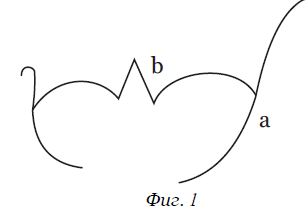

Беседа 965 от 3877 · Беинса Дуно
Природни изрази
Верен, истинен, чист и благ всякога бъди!
Размишление
Изпейте упражнението „Махар-Бену“ и втората част от него, която представлява превод на първата. Преводът е следният: „В мрак, тъмнота е бил животът наш, но слънцето на живота просия у нас. И ний тръгнахме в пътя чист и свят за нас, свят за нас“.
(Прочете се резюме от темата: „Качества на най-голямото и на най-малкото число“.)
(Чете се темата: „Най-силната дума в българския език“.)
Следващия път пишете върху темата: „Най-старото дърво в света“.
Сега ще ви задам следните няколко въпроса: видимо и осезаемо нещо ли е гладът? – Гладът се чувства. Кои са отличителните черти на глада? По какво познавате, че някой човек е гладувал? – Очите му са хлътнали, лицето – посърнало, тялото – малко сгърбено, гласът – тих, мек, а общият вид – като на смирен човек. Кои са отличителните черти на сития, на нахранения човек? – Лицето му е пълно, месесто, очите – потънали в месо, ходът – сигурен, смел, гласът – висок, силен. Коремът на гладния човек е вдлъбнат, като вдлъбнатината на някои шишета. Коремът на изхранения човек е малко изпъкнал навън, като издутата част на някои шишета. Като съберете един пълен и един слаб човек, двамата заедно ще образуват едно шише. Значи двама души са необходими, за да се образува едно шише. Освен външна страна гладът има и своя вътрешна, психическа страна. Зад глада се крие нещо важно и интересно. Във физическия свят гладът е израз на особена вътрешна духовна сила, от която човешкият дух и човешката душа се нуждаят. Значи облече ли се духът в материя, във форма на човек, той винаги изпитва глад. В това отношение интересно е човек да наблюдава промените, които стават във време на глад и на задоволено състояние, както по лицето си, така и върху целия си организъм. Лицето на човека е огледало на всички вътрешни промени, които стават с него. То е огледало, в което се отразява вътрешният човек. Ето защо той трябва да следи всички промени, които стават с него. Наблюдавайте какви промени стават в чертите на лицето, когато човек изживява някакви благородни чувства. Наблюдавайте какъв е погледът му тогава, какви са по големина очите, каква е формата на устата му и т.н. Казвате: „Еди-кой си човек е милостив, еди-кой си е разумен“. По какво познавате милостивия и по какво – разумния човек? Казвате: „Разумният човек се познава по своите мисли, чувства и дела“. Представете си, че някой разумен човек чете една хубава книга и си извади няколко ценни мисли от нея. Как ще познаете, че той е разумен човек? Ако той е извадил една мисъл, тя ще има свой определен израз. Разумният човек всякога си служи с криви линии; той винаги върви по спирала. По счупени линии той не върви. Движи ли се по криви линии, животът му ще се изправи. Разумният човек всякога избира най-дългия път, а глупавият избира най-късия път.
На пръв поглед тези мисли изглеждат противоречиви, но аз ще ви обясня идеята, която се крие в тях. Ние наричаме глупавия човек болен, а разумния – здрав. В такъв случай кой може да издържа на по-дълъг път: болният, или здравият? – Здравият, разбира се. Следователно здравият и разумният човек вървят по една и съща линия, а глупавият и болният и да искат, не могат да вървят по техния път. Те всякога ще гледат да съкратят малко пътя си, все ще търсят късия път. Значи в живота важни са резултатите. Дългото време с добри резултати е късо време, а късото време с лоши резултати е дълго време. Защо? – Понеже човек дълго време ще изпитва радости, вследствие на което ще забрави тази продължителност, през която е траяла изкупването. В това отношение резултатът е важен, че сте изкупили греховете си. Щом имате добри резултати, никой от вас няма да щади времето си. И тъй, когато казваме, че най-късият път е правият, всъщност ние разбираме разумния път, с добрите резултати, а не буквата на нещата.
Много от съвременните хора, както и много от вас, искат в скоро време да станат учени. За една година човек може ли да стане учен? За 5 или за 10 години може ли да стане учен? Да бъде човек горе-долу учен, да свърши четири отделения, затова се изискват 120 години. Казвате: „Тъй ли?“ Ами какво трябва да се каже тогава за хората, които са завършили университет и притежават диплом? Тази ученост е според разбиранията и изискванията на хората, които живеят на земята. Те имат особена мярка за учените хора. Щом е така, ние питаме: Защо като има толкова много учени хора на земята, те не оправиха досега света? Не могат ли да оправят света, те не са истински учени. Днес има толкова много учени-медици, лекари, а при това болестите се увеличават. Много учени-философи има, а при това мисълта на хората се забърква все повече и повече. Много учени-богослови има, а при това в умовете на религиозните хора съществува голяма каша. Навсякъде ще срещнете учени хора, а при това работите се повече оплитат, а не се разплитат. Значи днес хората се нуждаят от истинско, положително, реално знание, което да изправи забърканите работи в света.

Разумният човек обаче не постъпва така. Запали ли една клечка кибрит, той запалва свещта си и започва да чете на нейната светлина. Запали ли втора клечка кибрит, той запалва огъня си и започва да се грее на него. Разумният човек не хаби думите си. Той никога не говори напразно. Всяка негова дума е на мястото си и тя има точно определен смисъл. Той никога не се обръща към човека с думите: „Високо уважаеми, почитаеми господине! Имам великата чест да се разговарям с Вас...“ Това са думи от езика на висшата дипломация, където се спазва известен етикет. Тези думи са наредени като тоновете на някоя звучна симфония, която въздейства външно на човека, но не и върху неговата душа. Ако човек е тщеславен и чуе тези думи, отправени до него, той си въобразява, че наистина представлява нещо особено. Разумният човек си служи с прости думи. Когато иска да напише или да каже нещо на човека, когото обича и уважава, той ще каже: „Добри, или уважаеми господине!“ Думите, с които разумният човек си служи, са съдържателни.
Значи има думи съдържателни, има и думи безсъдържателни. Съдържателни думи са тези, които имат смисъл. Смислени думи пък са тези, които излизат от сърцето на човека. Ако глупавият човек си служи с думите на философа, тези думи имат ли смисъл за него? Ако някой човек напише едно любовно писмо, което заимства от някоя книга, това писмо има ли смисъл за него? Ако някой свири едно музикално парче, без да го разбира, това свирене има ли смисъл за него? Нещата са ценни, когато имат форма, съдържание и смисъл. Ето защо, стремете се и вие да си изработите съдържателен език. Всичко, каквото човек мисли, чувства и върши, трябва да бъде съдържателно, смислено. Важни и сериозни работи се случват в живота на човека, разрешението на които често зависи и от езика, с който той ще си послужи. Казват за някого: „Този човек е важна птица“. Какво означават тези думи? Да кажеш за човека, че е важна птица, това подразбира, че той заема високо положение, висок и отговорен пост.
Питам: Кои птици са важни? Орелът важна птица ли е? Ако сравните орела и славея, коя от двете птици седи на първо място? – Орелът е цар на птиците, а славеят е известен като добър певец. Според вас чия служба е по-висока: тази на славея – да пее, или на орела – да владее? Ако разглеждате лъв и овца, на кого ще дадете първото място: на лъва, или на овцата? Някои ще кажат, че овцата трябва да заеме първо място, Ако е така, защо лъвът наричат цар на животните?
Казвам: всички животни, растения и минерали не са нищо друго, освен символи, с които невидимият свят говори на разумните хора. Във всеки символ се крие велика идея. Щом е така, може ли да се определи коя птица, кое животно, кое растение или кой камък е най-важен в своето царство? Всяко същество има своя важност и предназначение. Орелът, за пример, казва: „Както аз хващам с клюна си всичко, каквото срещна на пътя си, така и вие отвисоко разглеждайте своите мисли, откъсвайте нечистите, които срещате на пътя си, и ги захвърляйте настрана!“ Лъвът казва: „Всичко непотребно в пътя си разкъсвай и премахвай!“ Овцата казва: „Когато тревата израсне високо и с това заглушава другите растения, ти я окоси, както аз я опасвам, за да могат всички растения около нея свободно да се развиват“. Славеят пък казва: „При всяка радост или скръб, при всяка мъчнотия пейте, славете Бога, както и аз правя“. Казвате: „Как можем да вземем лъва за образец в живота си, когато е толкова свиреп?“ Не, лъвът не е нито свиреп, нито жесток, но той е силен и вследствие на това си служи със съкратения процес; той съкращава времето. Лъвът казва на всички млекопитаещи: „Аз съм цар, имам право да разполагам с вас, затова всички вие трябва да работите за мене“. Месоядните животни имат високо мнение за себе си; те считат, че в умствено отношение стоят по-високо от тревопасните. Тревопасните пък в сърдечно отношение са по-културни от месоядните. Следователно ние имаме две култури: култура на ума и култура на сърцето. Тревопасните са представители на културата на сърцето, затова те са по-добри, имат чисто, благородно сърце. Месоядните са представители на културата на ума. Те са по-умни от тревопасните, но по сърце не са добри. И сега, вие, като разумни хора, ще съедините двата принципа, на лъва и на овцата, и ще кажете: „Ние ще бъдем умни като лъва и добри като овцата. Ще разкъсваме злото като лъва; ще окосяваме, ще опасваме тревата като овцата и ще даваме място на доброто в нас да расте“. Когато се коси тревата, и за нея е добро, защото с това се засилва нейната жизненост. Не се ли коси тревата, горната част и без това изсъхва. Тъй щото косенето на тревата е благо за нея.
И тъй, като пренесете всички тия психологически прояви на животните във вашия живот, вие ще си служите с тях като със специални методи за работа. Колкото и да е груб един метод, в даден случай той има своето приложение. Значи вие можете да си служите при специални случаи или с метода на лъва, или с метода на овцата, или с метода на орела, или с метода на славея. Също така вие можете да си служите и с метода на растенията, на минералите – изобщо с всичко, каквото съществува в живата природа. Разумният човек се учи от всичко. В това отношение от всички се изисква не само наблюдателност, но и вътрешно разбиране, вътрешно съпоставяне на явленията и предметите един с друг. Придобиете ли тези способности, като виждате орел и славей, вие няма да отричате значението на единия за сметка на другия, но ще ги съпоставите разумно, ще търсите връзката, отношението, което съществува между тях. Като виждате гълъб и славей, пак няма да отричате или да подценявате качествата на единия пред другия, но ще ги сравните и ще изтъкнете предимствата и на единия, и на другия. И гълъбът, и славеят пеят, но славеят е отличен певец, когато гълъбът е посредствен. И гълъбът, и славеят се хранят със зърнени храни, но гълъбът никога не изменя на своята храна. Той винаги остава вегетарианец. Славеят, обаче, има огнен характер. Него ще видите и тук, и там. Той се храни и с мушици, и със зрънца. В това отношение гълъбът има устойчив характер. Той е трезв и високо надминава славея.
Като се изучава живота от окултно гледище, интересно е да се знае при какви природни условия, именно, са създадени тези два характера – на славея и на гълъба. През разните периоди на развитие природата е създавала различни форми. За пример, когато се е създавал гълъбът и когато са се създавали млекопитаещите, условията в природата, както и идеите, които са циркулирали из пространството, са били съвсем различни. Следователно от различните типове и форми, които природата е създала, можем да съдим за миналото; от сегашните форми и типове можем да съдим за бъдещите, които природата приготовлява. Щом можем да определим това нещо за животните, на същото основание ние можем да определим какъв ще бъде човекът, когото природата приготовлява. Природата е приготвила вече модела за бъдещия човек. Тя чака само неговото време, за да го изяви и тури на работа в света. Това са далечни перспективи, наистина, но и те ще се реализират някога. Една от близките идеи е човек да се самоизучава: да изучава своите мисли, чувства и действия. Да се изучава човек, това подразбира той да се самонаблюдава, да изправя погрешките си, но не и да се самокритикува. Самокритиката е достояние на най-учените, на най-благородните, на най-възвишените хора. Обикновеният човек не трябва да се занимава със самокритика. Тя представлява остър нож, с който той може да се нарани. Внушите ли на някой слаб човек мисълта, че той е лош, няма да мине много време и, по силата на самовнушението, той действително ще стане лош човек. По-добре е на слабия човек да кажете, че е добър, за да стане такъв, отколкото да му кажете, че е лош, и да стане лош.
Всички сте опитали силата на внушението и затова стремете се да си внушавате добри и прави мисли, а не криви и отрицателни. За пример, някой от вас започва да кашля. Какво трябва да прави? Трябва ли да се страхува, да търси лекар, да му даде някакви лекарства? Приложете за лекуване на кашлицата следния метод: пребройте колко пъти ще кашляте днес. Например, днес сте кашляли 40 пъти. Тогава, вечерта, като си лягате, кажете си: „Утре аз ще кашлям 30 пъти“. Бройте и този ден, да видите колко пъти ще кашляте. Ако сте успели в лекуването си, вие ще кашляте 30 пъти само. Вечерта, преди лягане, пак си кажете: „Утре ще кашлям само 20 пъти“. Така постепенно намалявайте броя на кашлянето, докато стигнете да кашляте само един път през деня. Упражнявайте волята си по този начин и ще видите какви резултати ще придобиете. Днес мнозина вървят в медикаментите, но нямате добри резултати от тях.
Съвременните хора носят бастони, но с това те стават инвалиди. Вземете, например, някой стар човек, който носи тояга и се подпира на нея. Докато той не е започнал да носи тояга, все още уповава на краката си, на силите си. В който ден той вземе тояга в ръка, силите му го напускат. И ще видите, че този човек от ден на ден отпада, защото вече няма вяра в себе си. Той си самовнушава, че старостта го е налегнала, вследствие на което губи и последните си сили. Според модата и младите носят бастони. Нека носят, но да не се подпират, да не уповават на тях. Щом искате, носете бастони, но ги махайте из въздуха, пазете се от кучетата, но не се крепете с тях, не се подпирайте. Уповавайте на ръцете, на краката си, а бастоните носете само като забавление, като мода.
Казвам: преди всичко човек трябва да уповава на своя ум, на своето сърце и на своя воля. Той трябва да се съветва с душата си, а да се учи от духа си. Постъпва ли по този начин, той ще стане учен човек; не постъпва ли така, големи нещастия и страдания ще го сполетят. Ако не искате да станете преждевременно инвалиди, работете с тези четири величини, които Бог ви е дал: със своя ум и със своето сърце, със своята душа и със своя дух.
Верен, истинен, чист и благ всякога бъди!
Лекция от Учителя, държана на 3 март 1926 г. в град София.